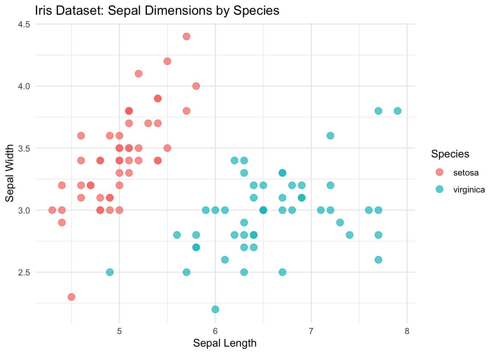
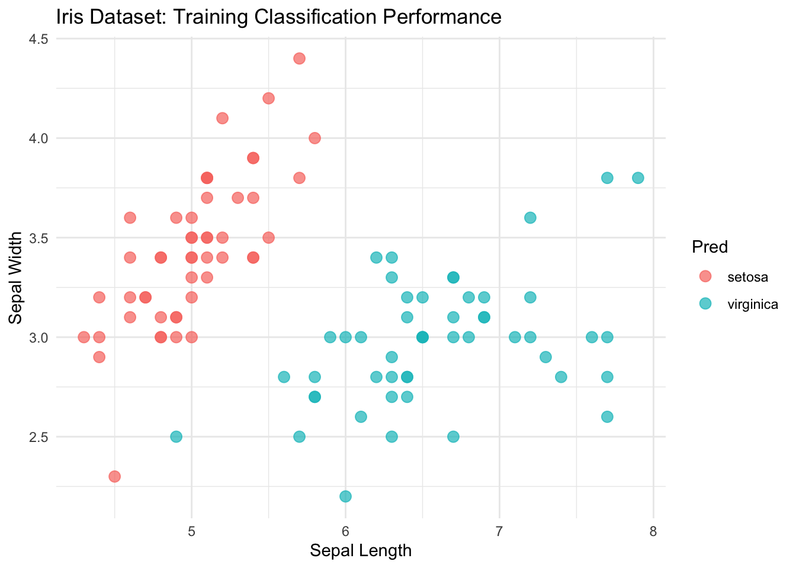
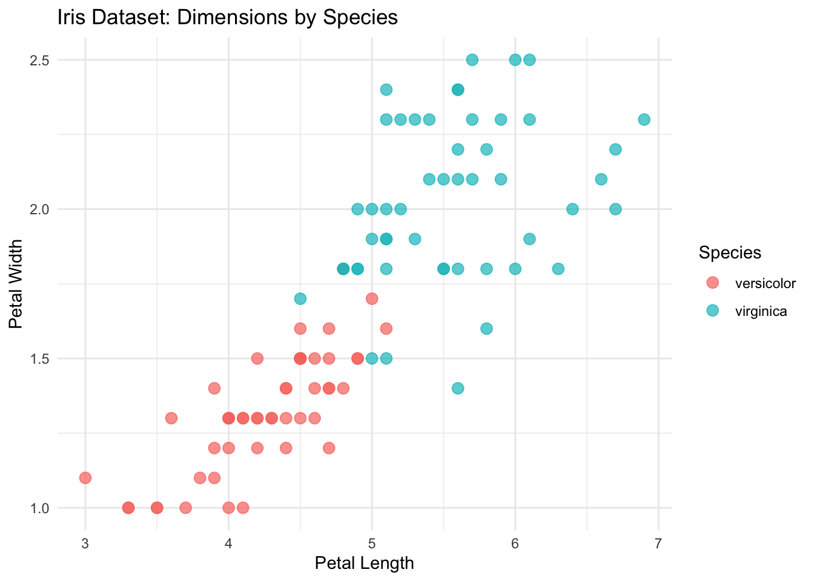
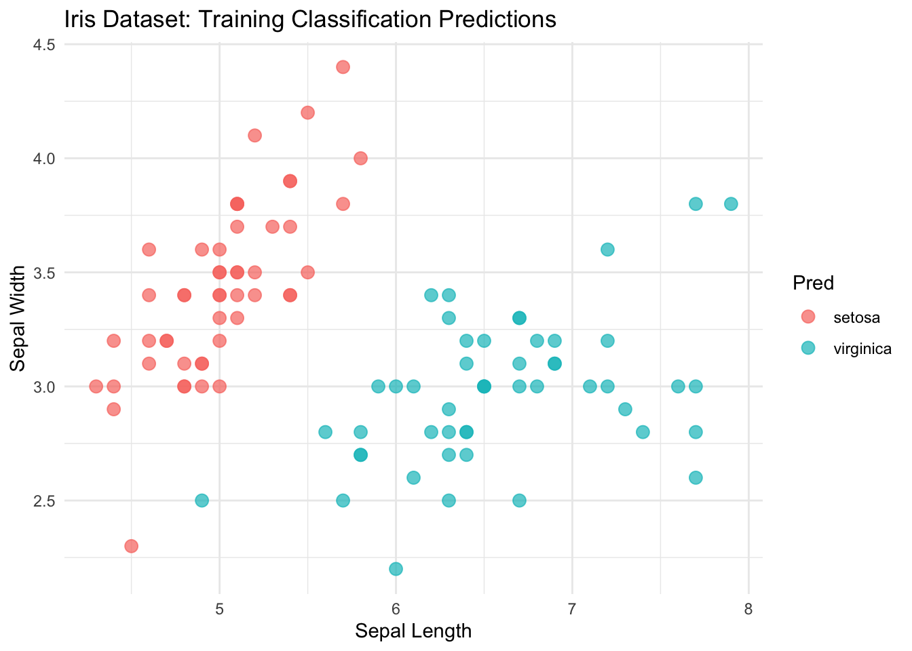
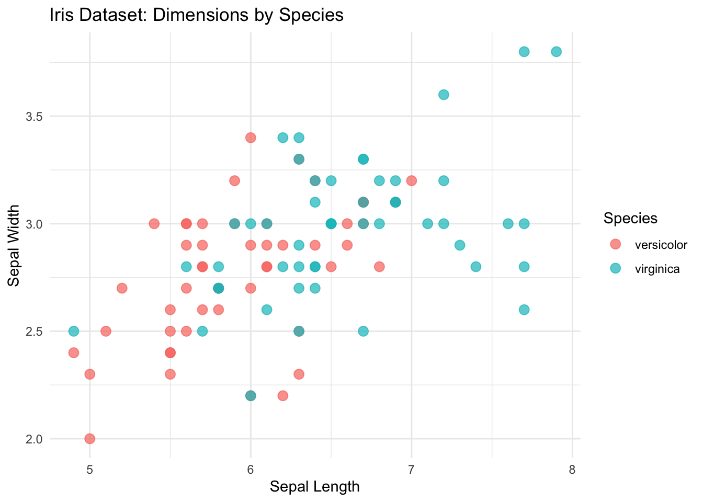

Practical 5
Lab
Materials from this section can be downloaded from here.
Example Script
You can download the example_script.R here.
library(ggplot2)
library(dplyr)
#Script for modelling iris species based on sepal characteristics
## Iris Dataset Modelling
#The iris dataset is composed of 50 flowers from three different species.
#Measurements include width and length (centimeters) for petals and sepals of each flower.
#Filtering out versicolor to run a binary example
#focus is on viridis and seratosa species
mini_iris <- iris %>%
filter(Species != 'versicolor')
### Scatter Plot of Iris dataset with Sepal Length and Width as axes
### Points are colored by their species
ggplot(mini_iris, aes(x = Sepal.Length, y = Sepal.Width, color = Species)) +
geom_point(size = 3, alpha = 0.7) + # Add points with some transparency
theme_minimal() + # Use a clean theme
labs(
title = "Iris Dataset: Sepal Dimensions by Species",
x = "Sepal Length",
y = "Sepal Width"
)
#Objective
#Goal of this analysis is to identify features capable of distinguishing flower species with high accuracy. We achieve this task using the **logistic regression model**, focusing on 1 vs. all comparisons.
#Training logistic regression model
iris.fit <- glm(Species ~ Sepal.Length + Sepal.Width,
family = 'binomial',
data = mini_iris)## Warning: glm.fit: algorithm did not converge## Warning: glm.fit: fitted probabilities numerically 0 or 1 occurred#Calculating class predictions
mini_iris$Prob <- predict.glm(iris.fit,
mini_iris[,c('Sepal.Length','Sepal.Width')],
type = 'response')
#Assigning class labels
mini_iris$Pred <- ifelse(mini_iris$Prob >= 0.5,"virginica", "setosa")
#Comparing to ground truth labels
mini_iris$Result <- mini_iris$Species == mini_iris$Pred
## Visualizing Sepal dimensions by species
ggplot(mini_iris, aes(x = Sepal.Length, y = Sepal.Width, color = Pred)) +
geom_point(size = 3, alpha = 0.7) + # Add points with some transparency
theme_minimal() + # Use a clean theme
labs(
title = "Iris Dataset: Training Classification Performance",
x = "Sepal Length",
y = "Sepal Width"
)
## Repeating analysis between Viridis and versicolor
mini_iris <- iris %>%
filter(Species != 'setosa')
ggplot(mini_iris, aes(x = Petal.Length, y = Petal.Width, color = Species)) +
geom_point(size = 3, alpha = 0.7) + # Add points with some transparency
theme_minimal() + # Use a clean theme
labs(
title = "Iris Dataset: Dimensions by Species",
x = "Petal Length",
y = "Petal Width"
)
iris.fit <- glm(Species ~ Sepal.Length + Sepal.Width,
family = 'binomial',
data = mini_iris)
iris_pred <- predict.glm(iris.fit,
mini_iris[,c('Sepal.Length','Sepal.Width')],
type = 'response')
table(mini_iris$Species == ifelse(iris_pred >= 0.5, 'virginica','versicolor'))##
## FALSE TRUE
## 25 75Example Notebook
You can download the Example_Notebook.Rmd here.
Iris Dataset Modelling
The iris dataset is composed of 50 flowers from three different species. Measurements include width and length (centimeters) for petals and sepals of each flower.
## Sepal.Length Sepal.Width Petal.Length Petal.Width Species
## 1 5.1 3.5 1.4 0.2 setosa
## 2 4.9 3.0 1.4 0.2 setosa
## 3 4.7 3.2 1.3 0.2 setosa
## 4 4.6 3.1 1.5 0.2 setosa
## 5 5.0 3.6 1.4 0.2 setosa
## 6 5.4 3.9 1.7 0.4 setosaFeature visualization
mini_iris <- iris %>%
filter(Species != 'versicolor')
ggplot(mini_iris, aes(x = Sepal.Length, y = Sepal.Width, color = Species)) +
geom_point(size = 3, alpha = 0.7) + # Add points with some transparency
theme_minimal() + # Use a clean theme
labs(
title = "Iris Dataset: Sepal Dimensions by Species",
x = "Sepal Length",
y = "Sepal Width"
)
Objective
Goal of this analysis is to identify features capable of distinguishing flower species with high accuracy. We achieve this task using the logistic regression model, focusing on 1 vs. all comparisons.
Logistic Regression
From a probabilistic perspective, the logistic regression follows a Bernoulli distribution
\[ y_i \sim Bernouilli(\pi_i) \]
Where \(y_i\) is the classification for observation \(i\). \(\pi_i\) represents the Bernoulli parameter for observation \(i\) and is calculated as
\[ \pi_i = \sigma(x\beta) = P(y_i = 1| x)= \frac{1}{1 + \exp(-x\beta)} \]
Logistic regression extends the linear model by using the sigmoid/logistic function \(\sigma(x\beta)\) which allows it to bound its outputs between 0 and 1.
Model Fitting
## Question: can you try using Petal length and width instead?
##Hint: how are we currently specifying what features are used in the model?
iris.fit <- glm(Species ~ Sepal.Length + Sepal.Width,
family = 'binomial',
data = mini_iris)## Warning: glm.fit: algorithm did not converge## Warning: glm.fit: fitted probabilities numerically 0 or 1 occurredmini_iris$Prob <- predict.glm(iris.fit,
mini_iris,
type = 'response')
##Question: Can you change the two lines below into a pipe operation?
##Hint: you will need the mutate() function and the %>% operator
mini_iris$Pred <- ifelse(mini_iris$Prob >= 0.5,"virginica", "setosa")
mini_iris$Result <- mini_iris$Species == mini_iris$Pred
table(mini_iris$Result)##
## TRUE
## 100Model Visualization
##Question: Can you add an additional plot that shows the TRUE species labels?
#Hint: what was the name of the column storing the labels? What argument is being used to visualize the Predicted labels?
ggplot(mini_iris, aes(x = Sepal.Length, y = Sepal.Width, color = Pred)) +
geom_point(size = 3, alpha = 0.7) + # Add points with some transparency
theme_minimal() + # Use a clean theme
labs(
title = "Iris Dataset: Training Classification Predictions",
x = "Sepal Length",
y = "Sepal Width"
)
## Running a linear regression to compare to logistic regression
mini_iris$Num_Species <- ifelse(mini_iris$Species == 'setosa', 1,2)
iris.lm <- lm(Num_Species ~ Sepal.Length + Sepal.Width,
data = mini_iris)
mini_iris$Num_pred <- predict.lm(iris.lm,mini_iris)
summary(mini_iris$Num_pred)## Min. 1st Qu. Median Mean 3rd Qu. Max.
## 0.8347 1.0740 1.4250 1.5000 1.8993 2.5424## Min. 1st Qu. Median Mean 3rd Qu. Max.
## 0.0 0.0 0.5 0.5 1.0 1.0Feature selection and additional modelling
Exploring optimal features to compare viridis and versicolor species.
mini_iris <- iris %>%
filter(Species != 'setosa')
##Question:can you change the plot to show Petal length and width?
##hint: aes(x = ?, y = ?)
ggplot(mini_iris, aes(x = Sepal.Length, y = Sepal.Width, color = Species)) +
geom_point(size = 3, alpha = 0.7) + # Add points with some transparency
theme_minimal() + # Use a clean theme
labs(
title = "Iris Dataset: Dimensions by Species",
x = "Sepal Length",
y = "Sepal Width"
)
Evaluation
Evaluation of the trained logistic regression model demonstrates satisfactory classification performance.
N.B: current estimates are based on training data. Must adapt analysis to be based on held-out samples for future updates.
iris.fit <- glm(Species ~ Sepal.Length + Sepal.Width,
family = 'binomial',
data = mini_iris)
iris_pred <- predict.glm(iris.fit,
mini_iris,
type = 'response')
## Question: is the below function hard to read? How could we fix it?
##Hint: pipe operator
as.data.frame(table(mini_iris$Species == ifelse(iris_pred >= 0.5, 'virginica','versicolor')))## Var1 Freq
## 1 FALSE 25
## 2 TRUE 75